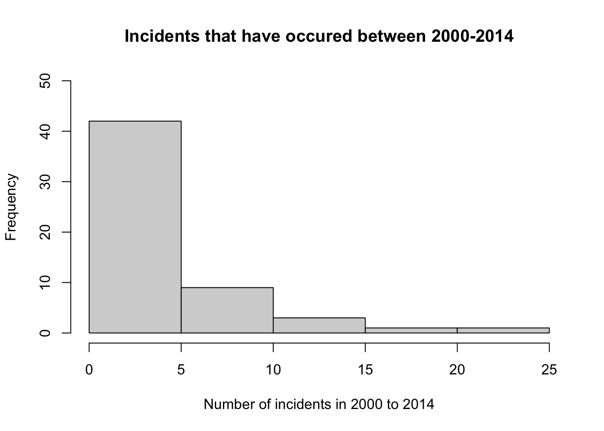

Ascertaining improvement in airline business to guarantee passenger safety and satisfaction
Data
Visualizations
Author
Ronald Bentil
Published
March 25, 2023
OVERVIEW
This is a post that will be my Midterm assignment, testing my knowledge and skills acquired in/on Data visualization thus far.
PREAMBLE
Travel is one thing people all over the world share in common usually for family, business or pleasure; be it local or international. Among the many modes of travel, the fastest and most convenient especially for longer distances is the airplane. However, in spite of the many contingencies put in place, the plane remains a machine which is prone to faults and unforeseen circumstances regardless of the efforts put in place.
In this assignment, I will analyze data incidents and number of fatal accidents for associated with each airline for about 30 years and attempt to make certain conclusions.
Criteria for choice of parameters used in assessment:
The data set had several airlines so airlines with on average one incident per year or more in the period 1985-1999 and 2000-2014 were selected for analysis.
DATA
The data set I will be using for my visualizations is an already existent data set package in R. Source: Aviation Safety Network.
A data dictionary has been added to provide definitions for the various headers in the data set.
Below, I generated the averages and standard deviations of the number of incidents per periods (1985-1999 and 2000-2014)
Code
SumIncidents =rbind(Average =colMeans(airlinesafety[c("incidents_00_14", "incidents_85_99")]),`Standard deviation`=apply(airlinesafety[c("incidents_00_14", "incidents_85_99")], MARGIN =2, FUN = sd),Median =apply(airlinesafety[c("incidents_00_14", "incidents_85_99")], MARGIN =2, FUN = median),`% of airlines with more than incident in 15 years`=100*c(mean(airlinesafety$incidents_00_14 >1), mean(airlinesafety$incidents_85_99 >1)))SumIncidents
incidents_00_14
Average 4.125000
Standard deviation 4.544977
Median 3.000000
% of airlines with more than incident in 15 years 67.857143
incidents_85_99
Average 7.178571
Standard deviation 11.035656
Median 4.000000
% of airlines with more than incident in 15 years 82.142857
Code
hist(airlinesafety$incidents_85_99, freq =TRUE,xlab ="Number of incidents in 1985 to 1999",ylab ="Frequency", ylim =c(0, 50))
Code
hist(airlinesafety$incidents_00_14, freq =TRUE,xlab ="Number of incidents in 2000 to 2014",ylab ="Frequency", ylim =c(0, 50))

Further, i went on to generate averages and standard deviations of the number of fatal accidents for the same periods (1985-1999 and 2000-2014)
Code
SumFatal_accidents =apply(airlinesafety[c("fatal_accidents_00_14", "fatal_accidents_85_99")], MARGIN =2, FUN =function(x) {c(Average =mean(x), SD =sd(x), quantile(x, probs =c(.25, .5, .75, 1)), 100*mean(x >1))})rownames(SumFatal_accidents) =c("Average", "Standard deviation", "Q1 (<25%)", "Median", "Q3 (<75%)", "Max","% of airlines with more than fatal accident in 15 years")SumFatal_accidents
fatal_accidents_00_14
Average 0.6607143
Standard deviation 0.8586837
Q1 (<25%) 0.0000000
Median 0.0000000
Q3 (<75%) 1.0000000
Max 3.0000000
% of airlines with more than fatal accident in 15 years 21.4285714
fatal_accidents_85_99
Average 2.178571
Standard deviation 2.861069
Q1 (<25%) 0.000000
Median 1.000000
Q3 (<75%) 3.000000
Max 14.000000
% of airlines with more than fatal accident in 15 years 41.071429
With this information, I sought to know the airlines with much with on average one incident per year or more in the period 1985-1999 as well as the period 2000-2014
I cant exactly infer from the descriptive statistics which airline is the safest for travel. However, from the visualizations, it is clear that there has been and continues to be significant reduction in the number of incidences and fatal accidents. A great indication that there is robust improvement in the services and technology over the years and airlines are doing the utmost best to allay passenger fears, and get them to their destinations safely. The choice though, is totally a matter of preference!
Source Code
---title: "BCB 520- Midterm Portfolio Post"subtitle: "Assessment of airline safety thus far"author: "Ronald Bentil"date: "2023-03-25"categories: [Data, Visualizations]image: "coa-aviation-safety-image.jpeg"code-fold: truecode-tools: truedescription: "Ascertaining improvement in airline business to guarantee passenger safety and satisfaction"---## OVERVIEWThis is a post that will be my Midterm assignment, testing my knowledge and skills acquired in/on Data visualization thus far. ## PREAMBLETravel is one thing people all over the world share in common usually for family, business or pleasure; be it local or international. Among the many modes of travel, the fastest and most convenient especially for longer distances is the airplane. However, in spite of the many contingencies put in place, the plane remains a machine which is prone to faults and unforeseen circumstances regardless of the efforts put in place.In this assignment, I will analyze data incidents and number of fatal accidents for associated with each airline for about 30 years and attempt to make certain conclusions.Criteria for choice of parameters used in assessment:The data set had several airlines so airlines with on average one incident per year or more in the period 1985-1999 and 2000-2014 were selected for analysis. ## DATAThe data set I will be using for my visualizations is an already existent data set package in R. Source:[Aviation Safety Network](https://r-data.pmagunia.com/dataset/airline-safety).A data dictionary has been added to provide definitions for the various headers in the data set. ```{r}airlinesafety=read.csv('Airline safety datset.csv', header =TRUE)head(airlinesafety)glimpse(airlinesafety)```Below is the data dictionary that defines attributes in the data:```{r}library(tidyverse)library(readxl)library(dplyr)airlinesafety_attributes <-read_xlsx("airlinesafetydatadictionary.xlsx")knitr::kable(airlinesafety_attributes)```## VISUALIZATIONSBelow, I generated the averages and standard deviations of the number of incidents per periods (1985-1999 and 2000-2014)```{r}SumIncidents =rbind(Average =colMeans(airlinesafety[c("incidents_00_14", "incidents_85_99")]),`Standard deviation`=apply(airlinesafety[c("incidents_00_14", "incidents_85_99")], MARGIN =2, FUN = sd),Median =apply(airlinesafety[c("incidents_00_14", "incidents_85_99")], MARGIN =2, FUN = median),`% of airlines with more than incident in 15 years`=100*c(mean(airlinesafety$incidents_00_14 >1), mean(airlinesafety$incidents_85_99 >1)))SumIncidentshist(airlinesafety$incidents_85_99, freq =TRUE,xlab ="Number of incidents in 1985 to 1999",ylab ="Frequency", ylim =c(0, 50))hist(airlinesafety$incidents_00_14, freq =TRUE,xlab ="Number of incidents in 2000 to 2014",ylab ="Frequency", ylim =c(0, 50))```Further, I went on to generate averages and standard deviations of the number of fatal accidents for the same periods (1985-1999 and 2000-2014)```{r}SumFatal_accidents =apply(airlinesafety[c("fatal_accidents_00_14", "fatal_accidents_85_99")], MARGIN =2, FUN =function(x) {c(Average =mean(x), SD =sd(x), quantile(x, probs =c(.25, .5, .75, 1)), 100*mean(x >1))})rownames(SumFatal_accidents) =c("Average", "Standard deviation", "Q1 (<25%)", "Median", "Q3 (<75%)", "Max","% of airlines with more than fatal accident in 15 years")SumFatal_accidents```With this information, I sought to know the airlines with much with on average one incident per year or more in the period 1985-1999 as well as the period 2000-2014```{r}selected_85_99 = airlinesafety$incidents_85_99 >=15barplot(formula = fatal_accidents_85_99 ~ airline, data = airlinesafety[selected_85_99,],horiz =FALSE, cex.axis =1,xlab ="Airline", xaxt ="n",las =2,ylab ="Number of fatal accidents (1985-1999)",space =1)end_point =0.5+2*NROW(airlinesafety) -1text(seq(1.5, end_point, by =2),par("usr")[3]-0.25,srt =30, adj =1, xpd =TRUE,labels = airlinesafety[selected_85_99,]$airline, cex =0.65)``````{r}selected_00_14 = airlinesafety$incidents_00_14 >=15barplot(formula = fatal_accidents_00_14 ~ airline, data = airlinesafety[selected_00_14,],horiz =FALSE, cex.axis =1,xlab ="Airline", xaxt ="n",las =2,ylab ="Number of fatal accidents (2000-2014)",space =1)end_point =0.5+2*NROW(airlinesafety) -1text(seq(1.5, end_point, by =2),par("usr")[3]-0.25,srt =30, adj =1, xpd =TRUE,labels = airlinesafety[selected_00_14,]$airline, cex =0.65)```## CONCLUSIONSI cant exactly infer from the descriptive statistics which airline is the safest for travel. However, from the visualizations, it is clear that there has been and continues to be significant reduction in the number of incidences and fatal accidents. A great indication that there is robust improvement in the services and technology over the years and airlines are doing their utmost best to allay passenger fears, and get them to their destinations safely. The choice though, would totally be a matter of preference!